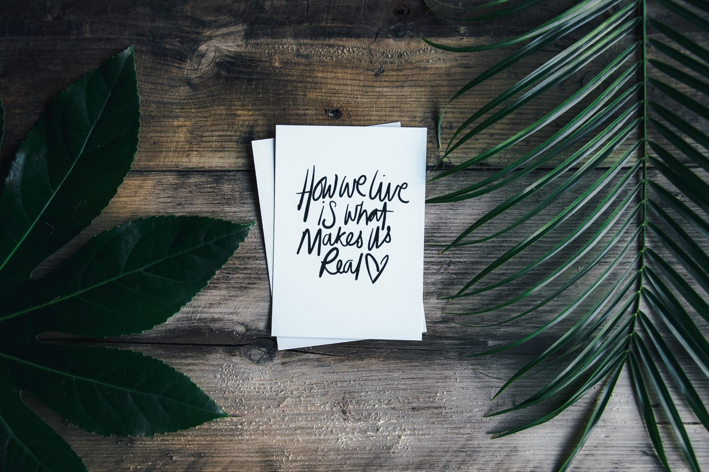
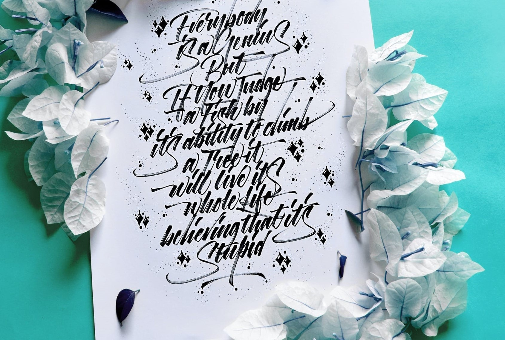
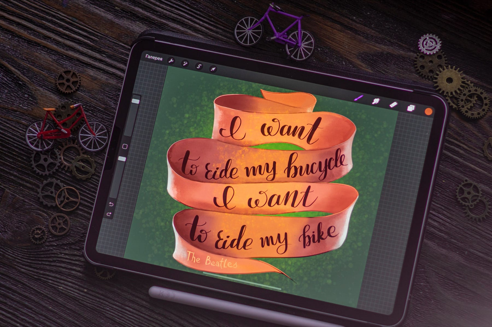

Be Water My Friend
QUOTES

In qua quid est boni praeter summam voluptatem, et eam sempiternam? Cur post Tarentum ad Archytam? Qua ex cognitione facilior facta est investigatio rerumano occultissimarum. Negat enim tenuissimo victu, id est contemptissimi escis et sed potionibus, minorem voluptatem. Ego quoque, inquit, didicerim libentius si table quiduse proactive domination.


Qua ex cognitione facilior facta est investigatio rerumano occultissimarum. Negat enim tenuissimo victu, id est contemptissimi escis et sed potionibus, minorem voluptatem. Ego quoque, inquit, didicerim libentius si table quiduse proactive domination.

